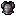
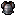

auto64-then-per-asset-cap
Point 0.0180207; global used 2; cold core 3.1 ms

Native-size images and nearest-neighbor enlarged copies. Research only; point error is not an artistic quality score.
Point 0.0180207; global used 2; cold core 3.1 ms
Point 0.0179808; global used 2; cold core 0.2 ms

Point 0.0052578; global used 4; cold core 1.8 ms

Point 0.0055907; global used 4; cold core 0.3 ms

Point 0.0016232; global used 8; cold core 2.0 ms


Point 0.0014825; global used 8; cold core 0.3 ms

Point 0.0006873; global used 16; cold core 2.4 ms


Point 0.0006336; global used 16; cold core 0.2 ms